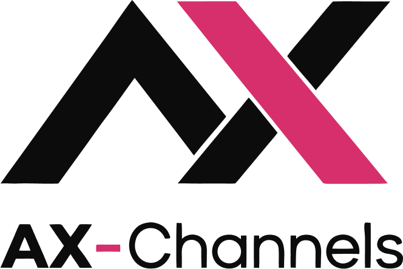
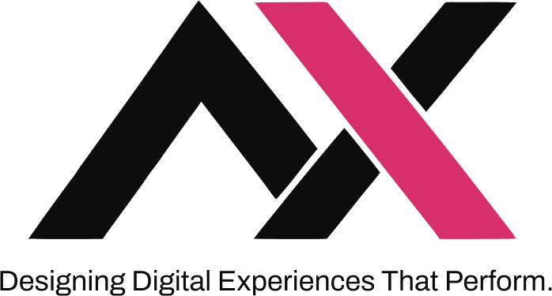
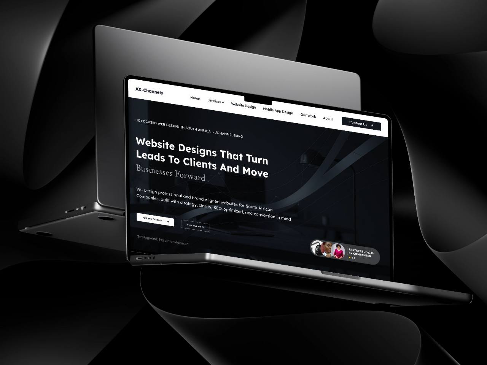

Startups And New Businesses
Establishing an identity from the start, so the first website, profile and social accounts launch looking like one business.
Brand Identity Systems
We design brand identity systems for South African businesses — the logo, and the colour, type, graphic language and rules around it — so the business looks like the same business on its website, its social media, its proposals and its business cards. For new businesses, established ones due a refresh, and teams whose look has drifted as they have grown.
 Guidelines
Guidelines

Lockup & Clear SpaceInconsistency Rarely Arrives All At Once. It Builds Up One File, One Post And One Supplier At A Time.
The website, the social profiles and the email signature were each made at a different time, by a different person, and it shows.
It works on a signboard but blurs as a profile picture, a browser icon or an embroidered badge, because it was only ever designed at one size.
The company profile, the flyer and the presentation share a name but not a look, so each one has to earn recognition on its own.
Which blue? Which font? Can the logo sit on a photograph? Without written answers, every designer and printer guesses differently.
More staff, more suppliers and more channels mean more people making brand material — and more ways for it to wander.
The services, the audience or the positioning have moved on, and the visual identity still describes where the business started.
None of that is fixed by redrawing the logo on its own. It is fixed by a system: a defined visual language, and rules clear enough that anyone producing material for the business can follow them.
A Connected Set Of Visual Elements, And The Rules For Using Them, That Decide How A Business Looks Wherever It Appears.
Three things get called “branding”, and they are not the same job. Strategy decides the direction, identity makes it visible, and guidelines keep it consistent once other people start using it. The identity is the core of this service; the other two are there so it has something to answer to, and so it lasts.
Positioning, audience, values and personality: what the business stands for, and who it needs to be recognised by.
Our part: a focused brand discovery with you — a workshop, a questionnaire and a review of your market and existing material — summarised as a creative brief both sides agree.
The agreed direction translated into a visual language: logo, colour, typography, graphic elements, imagery and layout.
Our part: the design work itself, developed as one system rather than as a set of unrelated files.
How the visual language is applied: what is allowed, what is not, and examples of both, so it survives being used by other people.
Our part: a guidelines document written for the people who will actually use it — your team, printers, developers and agencies.
What Each Project Includes Is Agreed In Writing Before Work Starts. Nothing Below Is Included By Default.
A — The Mark
The mark that carries the name, designed as a family rather than a single file, so it holds up from a signboard down to a profile picture.
How many versions a logo needs depends on where it will be used. That is decided in discovery, not by default.
B — The Language
Everything around the logo — the part that makes material recognisable even when the logo is not on it.
C — In Use
The system applied to the things your business actually produces, so it is proven in use rather than only on a presentation slide.
Applications are chosen per project. Which ones are in scope is listed in your proposal.
D — The Rules
The system written down, so your team, printers and agencies can use it consistently after handover without needing us in the room.
“Website visual direction” means how the identity should carry into a website — not a designed or built site. That is a separate service, compared further down this page.
The Studio’s Own Mark In Every Version It Needs — Colour, Reversed And One-Colour, With And Without Its Name And Tagline.


Each version exists for a reason: the full lockup where there is room to introduce the business, the mark alone where there is not — a browser tab, a profile picture, the navigation of this site — and one-colour versions for embroidery, engraving and single-colour print. A client’s logo family is sized to where it will actually be used; this one is ours.
You See Work At The End Of Every Stage, So Direction Is Settled While It Is Still Easy To Change.
Understand the business, its audience, its objectives and what is not working in the current brand. Mostly conversation, plus a review of what already exists.
You get a written summary of what we heard.
Establish the creative direction, the visual references, and the identity requirements — including every application the identity has to serve.
You get a creative brief and confirmed scope.
Develop the logo direction and the core visual identity system, shown applied to real material rather than floating on a blank page.
You get identity directions, presented in use.
Take the selected direction forward, work through the agreed feedback, and resolve the details across sizes, screens and print.
You get the approved identity.
Prepare the agreed brand assets and export files, finish the applications in scope, and document the system in the brand guidelines.
You get files, applications and guidelines.
How many initial directions and how many rounds of feedback a project includes is set in the proposal rather than left open, and so is the timeline — both depend on the scope, and neither is promised before it is known.
Shown On The Studio’s Own Identity: The Same Mark, Palette And Type Carried From Screen To Print To Product.



Where most people meet a business first, so the identity has to work on a screen before anywhere else.
Templates and rules that keep a feed recognisable when several people are posting to it.
Cards, letterheads and badges — small, physical and often the first thing handed over.
Long documents that need a layout system, not just a logo on the cover.
Campaign and promotional pieces that change often while the identity underneath stays put.
Email signatures, quotes, invoices and forms — the everyday material most identities forget.
The photographs are presentation mockups of AX-Channels’ own identity. The social and presentation tiles are set live on this page from the same system, to show how it carries across formats — they are illustrations, not client work.
Five Situations We Are Usually Brought Into. The Scope And Deliverables Are Shaped Around Yours.
Establishing an identity from the start, so the first website, profile and social accounts launch looking like one business.
A business that has outgrown its original look. A refresh keeps the recognition already built and fixes what no longer fits.
More people are producing brand material and it has started to drift. The identity may be sound; the written rules are what is missing.
Firms and practices that sell expertise, and want their proposals, profiles and online presence to look as considered as the work.
A new website, product or digital platform is coming, and it is the right moment to settle the identity before it is built into everything.
Tell us what you have and what is not working. We will say plainly whether you need a new identity, a refresh, or only guidelines.
Discuss Your BrandThey Are Two Services. One Decides How The Business Looks; The Other Turns That Into A Working Digital Experience.
Establishes the visual language of the business.
Need a brand identity?See how a brand project begins
Applies that language to a digital experience.
Need a website designed and developed?Website Design & Development
A brand identity project does not include designing or building a website. If you need both, the identity usually comes first and the website is scoped separately — that order means the site is designed with the finished identity rather than a placeholder.
One Client Identity, And The Studio’s Own. Websites, Products And Dashboards Are In The Full Portfolio.

Client Project · Brand Identity System
A type-led identity carried across printed collateral — letterhead, business cards, covers and posters — held together by a restrained palette of navy, black and stone with one warm accent, a compact monogram and a consistent typographic structure.
The brand system keeps everything we send out consistent — documents, decks and social media. Delivered exactly as scoped.
Studio Identity · Our Own Brand
The mark, palette and type used across this site, applied to the studio’s stationery, guidelines and merchandise. We hold our own identity to the same system we design for clients — it is the one shown in the hero and the touchpoints above.
Engagement & Enquiries
There are no fixed brand packages, because brand identity projects vary with the business, the creative requirements, the applications and the agreed deliverables. A new identity for a startup, a refresh that has to keep existing recognition, and guidelines for an identity that already works are different jobs — so scope is discussed and confirmed in writing before any work begins.
What it does, who it is for, what exists today and what is not working. The enquiry form takes a few minutes.
A conversation to understand what you need, which applications matter, and your timing — and to answer your questions.
Scope, deliverables, feedback rounds, timeline and cost, in writing. Work starts once it is agreed.
What Is Included, How It Differs From A Logo, And What It Costs.
It depends on the agreed scope, but usually a logo identity, a visual identity system (colour, typography, graphic elements, image direction and layout principles), a selection of brand applications, and brand guidelines that document how it is all used. The exact list is written into your proposal before work begins.
A logo is one element: the mark that carries your name. A brand identity is the whole visual language around it — colour, type, graphic elements, imagery and layout — together with the rules for using it, so everything the business produces looks like it came from the same place, whether the logo is on it or not.
Yes. For a new business we start with a focused discovery to agree positioning, audience and personality, then design the identity and the first applications you need to launch, such as business cards, social media templates and visual direction for a website.
Yes. A refresh starts by working out what is worth keeping — often the recognition you have already built — and what no longer fits. It can be a light evolution of the existing logo and palette or a more significant change; which one is right is agreed in discovery, before any design starts.
Yes. Guidelines are part of most identity projects, and can also be produced on their own for an identity that works but has never been written down. They cover logo usage, colour specifications, typography, consistency rules and examples of correct application.
Yes, and that is where it is designed to work first. Logo versions are checked at small sizes such as profile pictures and browser icons, colours are specified for screen as well as print, and social media templates can be included in scope. Designing and building the website itself is a separate service.
It depends on the agreed scope and deliverables — a new identity with a full set of applications is a different job from guidelines for an existing logo. There are no fixed brand packages. Enquire and we will send a tailored proposal, with the cost in writing, before any work starts.
Use the Start a Brand Project form, or email info@axchannels.co.za. Tell us about the business, what you have now and what you need. We reply within two working days, talk the brief through with you, and follow up with a written proposal.
Whether you are starting from nothing, refreshing what you have, or pulling an inconsistent look into one system, tell us about the business and where the brand is falling short. We reply within two working days.